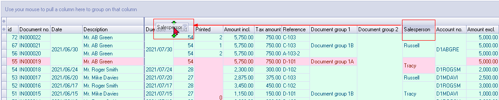
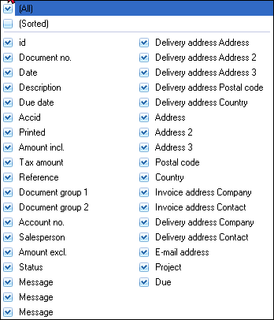
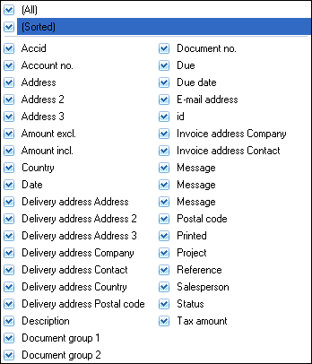
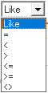
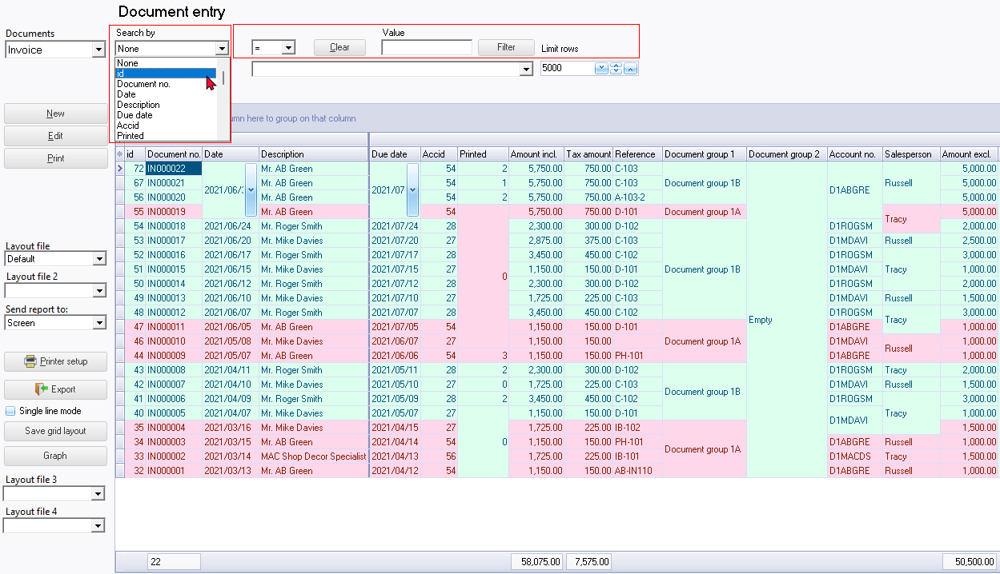
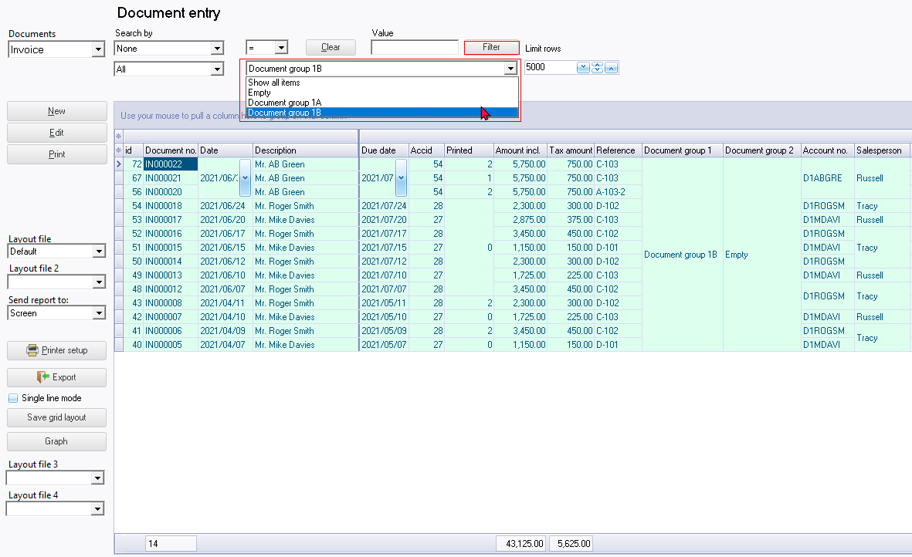

Filter options (Documents)
The osFinancials5 grid has a powerful and user-friendly filtering and sorting system that makes it quicker and easier than other methods. With just a few mouse clicks, you can group, sort, and filter any column(s) of data on most screens in a Set of Books. This feature is very useful and efficient for managing and analysing data.
Column headings
All the data for each of your sales documents and purchase documents are listed in thirty-six (36) columns. To view change the sequence in which the data is displayed, you may:
- Scroll bars - Scroll to the right or to the left on the horizontal scroll bar to view the information.
- Sequence of rows - Click on any of the column headings to change the sorting sequence of the documents listed in the descending or ascending sequence.
- Sequence of columns - Click on a column heading and drag it to the right or to the left to change the sequence in which the columns need to be displayed.

|
|
You may drag and drop any of the columns on the left band to the right band and the columns from the right band to the left band, to customise the grid for your requirements. |

|
|
If you wish to retain your layout, click on the Save grid layout button. |

Search by options
You may use the filter options to find a specific document, or all documents with the same values, in any of the thirty-six (36) columns. These columns are as follows:
|
Default |
Sorted (selected) - Alphabetical list |
|
 |
 |
To search for specific documents:
- The filter options will display only those documents in your search or filter criteria. To do this, you may:
- Search by - The default option is none. It will list all the column headings. You may select any of these as an option.
- Like - Operator to find all documents with the same value, values greater than, smaller than, greater than or equal to, smaller than or equal to the values you have selected, or wish to enter.
- Value - Enter the value for the field type you have selected, for example, Postal code (if you have selected "Postal code" as the "Search by" option).

- Once you have selected or specified the search criteria, click on the Filter button. Only those documents as in your search or filter criteria or options will be listed.
- If you need to clear your filter options and values, click on the Clear button. You may also click on any of the column headings to change the sorting sequence of the debtor (customer / client) accounts listed.
|
|
The "Line count" will show the number of records (documents) that matches your search or filter criteria. |
|
|
You may also search for documents in the "Investigator" screen (Search (Setup ribbon)). |
Filter by Document group
When processing documents, you may select up two (2) reporting groups for documents, if document groups are added in the Groups - Documents (Setup menu on the Setup ribbon).
You may select any available Document reporting group 1 to list only those documents linked to selected Document group 1.
To filter for specific documents for a document group:
- The default is "Empty". Select a document group 1 (e.g. Document group 1B, as in this example). Click on the Filter button. Only those documents linked to the selected document group will be listed.

- To clear your selection, Select "Show all items" and click on the Filter button.
|
|
You may change the Document groups - Reporting group1 on the context menu of the Document list screen. |